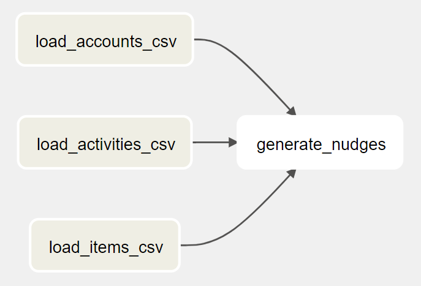
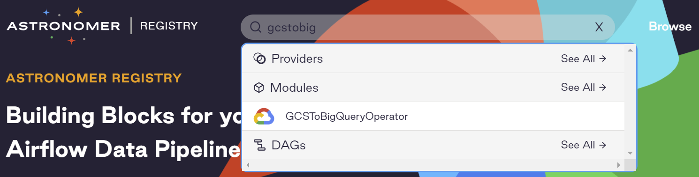
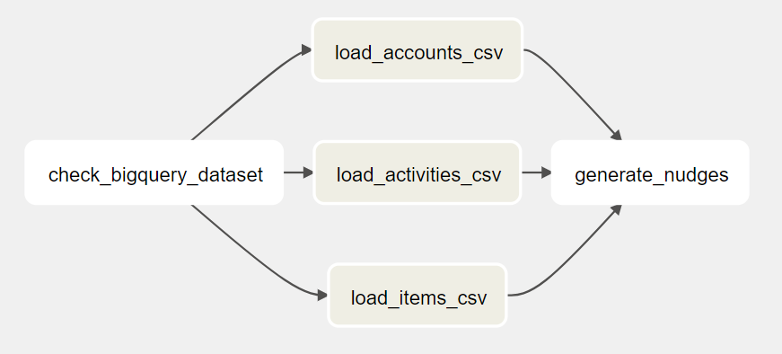
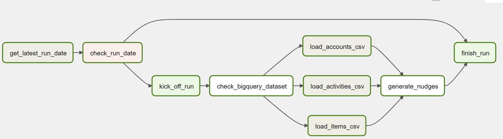

Create nudges DAG
When designing a DAG, we often start with critical tasks such as loading the data, transformation, exporting the data, etc. Then iteratively, we add other tasks such as checking if the BigQuery Dataset exists or not, if today's load has happened, etc.
Key tasks
To generate the nudges for the customers, we can load the daily exported CSV files to three tables in BigQuery. After that, we can run a SQL query that joins the three tables, create the nudge information, and store the results in another table. The DAG looks like this:

As the CSV files are on Google Cloud Storage (GCS) and we need to load them to BigQuery, we need an Operator that can do GCS to BigQuery. GCS to BigQuery is a pretty generic job, let's search in Astronomer Registry to see if Airflow has it in the built-in libraries:

Yes, we found the GCSToBigQueryOperator. Following it's documentation, let's create our three data load tasks:
Create a file named 9_generate_nudges_dag.py that contains the following code:
load_accounts_csv = GCSToBigQueryOperator(
task_id="load_accounts_csv",
bucket=STORE_RAW_DATA_BUCKET,
source_objects=[f"accounts_{CURRENT_DATE}.csv"],
destination_project_dataset_table=f"{DATASET_ID}.accounts",
schema_fields=[
{"name": "account_id", "type": "INTEGER", "mode": "NULLABLE"},
{"name": "account_name", "type": "STRING", "mode": "NULLABLE"},
{"name": "email", "type": "STRING", "mode": "NULLABLE"},
],
write_disposition="WRITE_TRUNCATE",
)
load_activities_csv = GCSToBigQueryOperator(
task_id="load_activities_csv",
bucket=STORE_RAW_DATA_BUCKET,
source_objects=[f"activities_{CURRENT_DATE}.csv"],
destination_project_dataset_table=f"{DATASET_ID}.activities",
schema_fields=[
{"name": "account_id", "type": "INTEGER", "mode": "NULLABLE"},
{"name": "item_id", "type": "INTEGER", "mode": "NULLABLE"},
{"name": "visit_time", "type": "TIMESTAMP", "mode": "NULLABLE"},
],
write_disposition="WRITE_TRUNCATE",
)
load_items_csv = GCSToBigQueryOperator(
task_id="load_items_csv",
bucket=STORE_RAW_DATA_BUCKET,
source_objects=[f"items_{CURRENT_DATE}.csv"],
destination_project_dataset_table=f"{DATASET_ID}.items",
schema_fields=[
{"name": "item_id", "type": "INTEGER", "mode": "NULLABLE"},
{"name": "item_name", "type": "STRING", "mode": "NULLABLE"},
{"name": "price", "type": "FLOAT", "mode": "NULLABLE"},
],
write_disposition="WRITE_TRUNCATE",
)
generate_nudges = GenerateNudgesOperator(
task_id="generate_nudges",
nudges_query=NUDGES_QUERY,
destination_dataset_table="analytics.nudges",
)
The generate_nudges task runs a BigQuery query and saves the results in a BigQuery table. It may look like an ordinary job. But unfortunately, there isn't an existing Operator that does the job. We need to create a custom Operator. In this custom Operator, we can use the built-in BigQueryHook to interact with BigQuery. We can find its source code on GitHub.
Let's call the custom Operator GenerateNudgesOperator
Create a file named generate_nudges_operator.py that contains the following code:
from airflow.models import BaseOperator
from airflow.providers.google.cloud.hooks.bigquery import BigQueryHook
from airflow.utils.decorators import apply_defaults
class GenerateNudgesOperator(BaseOperator):
@apply_defaults
def __init__(
self,
*,
nudges_query: str,
destination_dataset_table: str,
gcp_conn_id: str = "google_cloud_default",
**kwargs,
) -> None:
super().__init__(**kwargs)
self.gcp_conn_id = gcp_conn_id
self.nudges_query = nudges_query
self.destination_dataset_table = destination_dataset_table
def execute(self, context):
self.log.info(
f"Generating nudges with query {self.nudges_query} and write into {self.destination_dataset_table}..."
)
hook = BigQueryHook(gcp_conn_id=self.gcp_conn_id, use_legacy_sql=False)
hook.run_query(
sql=self.nudges_query,
destination_dataset_table=self.destination_dataset_table,
write_disposition="WRITE_TRUNCATE",
)
And the task looks like this:
generate_nudges = GenerateNudgesOperator(
task_id="generate_nudges",
nudges_query=NUDGES_QUERY,
destination_dataset_table="analytics.nudges",
)
Add other tasks
Check BigQuery Dataset
As a safety measure, we should add a task to check if the BigQuery Dataset exists before loading the CSV files.
After checking the Airflow built-in Operators, there isn't a built-in one. Let's create another custom Operator called CheckBigQueryDatasetOperator. Because it needs to access BigQuery, we can use the BigQueryHook again.
Create a file named check_bigquery_dataset_operator.py that contains the following code:
from airflow.models import BaseOperator
from airflow.providers.google.cloud.hooks.bigquery import BigQueryHook
from airflow.utils.decorators import apply_defaults
class CheckBigQueryDatasetOperator(BaseOperator):
@apply_defaults
def __init__(
self,
*,
dataset_id,
gcp_conn_id="google_cloud_default",
**kwargs,
) -> None:
super().__init__(**kwargs)
self.gcp_conn_id = gcp_conn_id
self.dataset_id = dataset_id
def execute(self, context):
self.log.info(f"Checking dataset {self.dataset_id}...")
hook = BigQueryHook(
gcp_conn_id=self.gcp_conn_id,
)
# Check dataset exists
datasets_list = hook.get_datasets_list()
self.log.info(f"datasets_list: {datasets_list}")
is_dataset_existed = False
if datasets_list:
datasets_id_list = [dataset.dataset_id for dataset in datasets_list]
is_dataset_existed = self.dataset_id in datasets_id_list
if is_dataset_existed:
return True
else:
raise Exception(f"Dataset id {self.dataset_id} not found")
And the task looks like this:
check_bigquery_dataset = CheckBigQueryDatasetOperator(
task_id="check_bigquery_dataset",
dataset_id=DATASET_ID,
)
Now the DAG looks like this:

Avoid duplicated runs
It is always a good idea to check if today's run finishes. There are multiple ways to do that. If there are numerous data pipelines, you should build an API to record their runs. When a pipeline is kicked off, it checks if the run for that day has been finished by calling the API. If yes, this particular DAG run should not continue with the following tasks.
In our case study, as we only have one data pipeline, we can assume that:
- The email system sends the emails out every day
- The data pipeline uploads a file to GCS (using the current date as the filename)
With this assumption, a few tasks can be added to finalize the DAG.

Let's dig into the new tasks.
Get latest run date
As mentioned above, we can check if a file named as current date exists in the GCS bucket. To do this, we can use the GCSListObjectsOperator from Airflow built-in libraries. The task looks like this:
get_latest_run_date = GCSListObjectsOperator(
task_id="get_latest_run_date",
bucket=NUDGES_HISTORY_BUCKET,
prefix=CURRENT_DATE,
)
From the code on Github, it returns the URI of the file on GCS or empty array(if the file does not exist). In Airflow Operator, any value that is returned by execute function is stored in xcom.
Now we have a value in xcom, let's move on to the next task.
Check run date
In this task, we can use BranchPythonOperator to decide if this particular run should continue. The task looks like this:
check_run_date = BranchPythonOperator(
task_id="check_run_date", python_callable=branch_func
)
And the branch_func:
def branch_func(ti):
# ti means Task Instance here. It is used to retrieve Xcom value
xcom_return_value = ti.xcom_pull(task_ids="get_latest_run_date", key="return_value")
log.info(f"Xcom_return_value: {xcom_return_value}")
if xcom_return_value:
log.info("Today's run already exists, finishing the dag...")
return "finish_run"
else:
log.info("Today's run does not exist, kicking off the run...")
From here, Airflow will decide if the DAG run should continue loading data or finish. To make the pipeline more user-friendly, we can use two DummyOperator to represent kick_off_run and finish_run tasks.
kick_off_run = DummyOperator(task_id="kick_off_run")
finish_run = DummyOperator(task_id="finish_run")
Summary
In this chapter, we've walked through designing and creating a DAG to load data from three CSV files and generate nudges in BigQuery. If you'd like to run it, you can run it yourself, be sure to replace the project ID and buckets in the DAG file.
PROJECT_ID = "derrick-sandbox"
NUDGES_HISTORY_BUCKET = "nudges_history"
STORE_RAW_DATA_BUCKET = "store_raw_data"
Or you can wait until the next chapter, in which I will cover the testing strategy, including a quick end-to-end test that can generate test files and trigger the DAG.